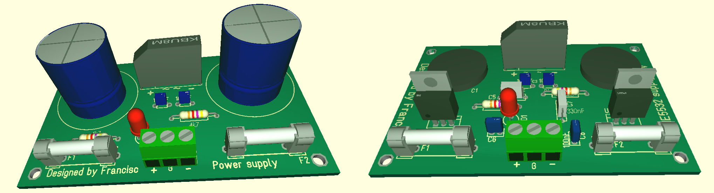

I needed 2 power supplies, one for the amplifier, one for the pre-amplifier. Both with simetrical voltage with respect to ground. Two transformers are used, a 19V for the pre-amplifier, and a 34V for the amplifier. I will present the final result of the power supplies below.
For more information and data, you can download the file below.